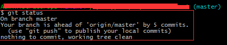
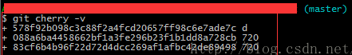
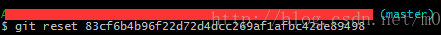

错误原因：
大文件存在没有被提交的commit记录里面；
解决方案：
删除有大文件的commit记录即可
移除大文件的正确姿势
1 | $ git rm --cached giant_file（文件名） |
解法一：
以下操作完后，相当于把本地代码回滚到远端的代码一致；的远端代码文件过大时，此种方式比从远端重新拉取方便快捷1
2
3git fetch -f -p
git checkout dev
git reset origin/dev --hard
- 第一句代码
git fetch -f -p的作用就是从本地拿到远程最新分支，覆盖本地存放的远程分支 第二句实际上因为主要开发分支就是
dev分支，小伙伴就是把大文件合并到这个分支，所以需要切换到这个分支。如果你不小心把大文件提交其它的分支，记得切换的就是你提交的分支。
如果提交大文件只是在自己的分支，并且放到了远程分支，那么合并到远程开发分支，那么只需要删除自己远程分支就好了，不需要继续往下做。第三句
git reset origin/dev --hard是把自己的本地dev分支覆盖，使用远程的分支，如果开发分支不是dev，那么请用其它的分支。
解法二：
网友：https://blog.csdn.net/m0_37696127/article/details/78984216分享的，不过我试了后没解决问题，但是也分享一下。
- 1、
git status查看未被传送到远程代码库的提交次数
 - 2、
git cherry -v查看未被传送到远程代码库的提交描述和说明
 - 3、
git reset commit_id撤销未被传送到远程代码库的提交

做到这里就已经可以重新添加提交了（注意一定要撤销有大文件的提交）